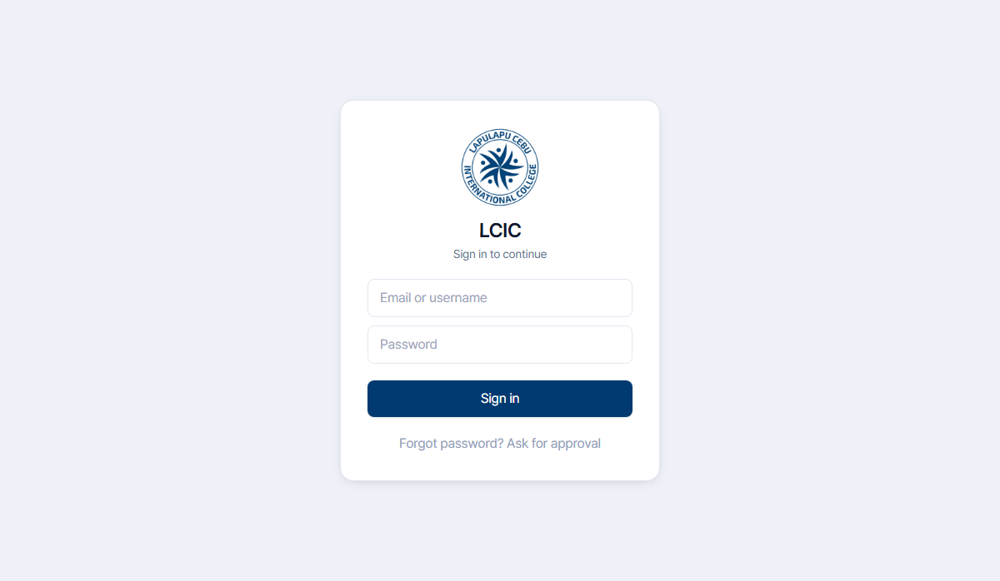
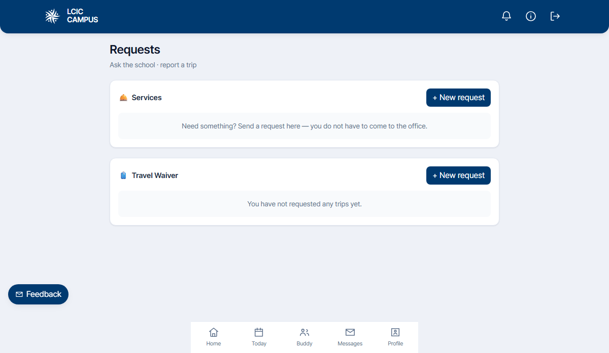
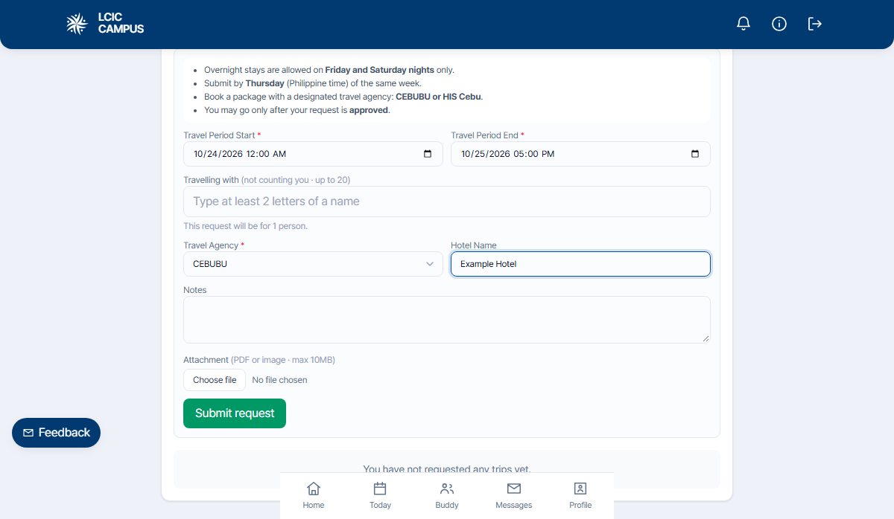
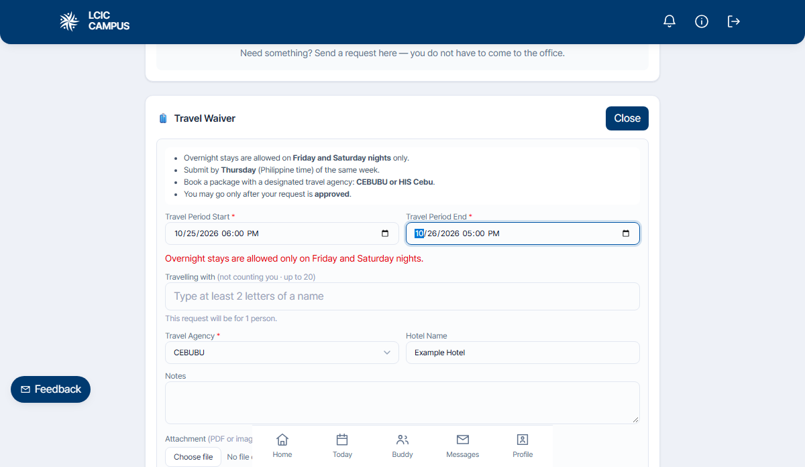

한국에서 출발하는 직항편으로 Mactan-Cebu International Airport (CEB)에 도착합니다.
| 공항 | Mactan-Cebu International Airport (CEB) |
|---|---|
| 위치 | Mactan Island, Lapu-Lapu City, Cebu |
| 학교까지 | 차량으로 약 15~20분 (LCIC에서 픽업해드립니다) |
필리핀에 입국하는 모든 외국인은 e-Travel 시스템에 사전 등록해야 합니다. 종전의 종이 입국 신고서·세관 신고서가 통합된 전자 신고 시스템으로, 등록 후 발급되는 QR 코드를 입국 심사대에 제시하면 절차가 완료됩니다.
등록 URL: https://etravel.gov.ph
STEP 1 계정 만들기
- 홈 화면 중앙의 녹색 Click here to Sign In 버튼을 누릅니다.
- 로그인 화면 하단의 Create an account를 선택합니다.
- 본인이 자주 사용하는 이메일 주소(Gmail · Naver 등)를 입력하고 Continue.
- 입력한 이메일로 발송된 6자리 OTP 인증번호를 입력합니다. 도착까지 최대 3분 소요될 수 있으며, 늦으면 Resend email code로 재발송 가능합니다.
- 비밀번호를 설정합니다. 최소 12자 이상이며 대문자 · 소문자 · 숫자 · 특수문자를 모두 포함해야 합니다.
- 설정 완료 후 Continue를 눌러 본인 정보 입력 화면으로 이동합니다.
STEP 2 Personal Information — 개인정보 입력
여권에 기재된 정보를 그대로 입력합니다. 한 글자만 달라도 입국 시 문제가 될 수 있으니 여권 사본을 옆에 두고 천천히 입력해주세요.
① 본인 사진 & 여권 종류
- Take a photo or upload a file: 얼굴 정면 사진을 업로드합니다.
- 여권 종류는 FOREIGN PASSPORT Holder(외국 여권 소지자)를 선택합니다.
② 이름 · 생년월일
| First Name | 여권 영문 이름 (예: SIHYEON) |
|---|---|
| Middle Name (optional) | 한국인은 보통 공란 |
| Last Name (optional) | 여권 영문 성 (예: PARK) |
| Suffix (optional) | 공란 |
| Sex | MALE / FEMALE |
| Birth Date | MM/DD/YYYY 형식 (월/일/연도 순) |
③ 연락처 · 국적 · 여권 정보
| Mobile Number | 국가코드 +82 선택 후 휴대폰 번호 입력 |
|---|---|
| Citizenship | South Korean |
| Country of Birth | South Korea |
| Passport Number | 여권번호 그대로 |
| Passport Issuing Authority | South Korea |
| Passport Issued Date | MM/DD/YYYY |
| Occupation | Student · Worker 등 본인에 맞게 선택 |
④ Permanent Country of Residence — 영주 국가
| Country | South Korea |
|---|---|
| No./Bldg./City/State/Province | 영문 주소 (예: SEOUL CITY · BUSAN CITY) |
| Address Line 2 (optional) | 공란 |
모든 항목을 입력했으면 Submit을 눌러 계정 등록을 완료합니다. Account Settings 요약 화면이 표시되며, 각 항목 옆
STEP 3 New Travel Declaration — 신고서 시작
대시보드의 큰 파란 New Travel Declaration (VIA AIR or SEA) 버튼을 눌러 신고서 작성을 시작합니다. 첫 화면에서 다음 옵션을 선택합니다.
| 등록 대상 | FOR ME (Current User) |
|---|---|
| 이동 수단 | AIR (항공편) |
| 여행 방향 | ARRIVAL — Entering the Philippines |
| Special Flight | 해당 없음 (일반 학생 입국은 체크 안 함) |
하단의 Data Privacy and Affidavit of Undertaking 안내를 확인하고 Continue를 눌러 다음 단계로 진행합니다.
STEP 4 여행 · 건강 · 세관 정보 입력
① Travel Details — 여행 정보
| Purpose of Travel | Education/Training/Studies |
|---|---|
| Traveler Type | AIRCRAFT PASSENGER |
| Flight Information | 항공사 · 항공편명 입력 |
| Country of Origin | South Korea |
| Airport of Origin | 출발 공항 (예: GIMHAE INTERNATIONAL AIRPORT) |
| Date of Departure | 한국 출발일 |
| Date of Return | 한국 귀국일 |
| With Transit (Connecting Flight) | 경유 시 체크 / 직항이면 미체크 |
| Airport of Destination | Mactan-Cebu International Airport (CEB) |
| Date of Arrival | 필리핀 도착일 |
| Destination | Hotel / Resort 등을 선택 후 학교명 검색 또는 직접 입력 |
② Health Declaration — 건강 정보
- 지난 30일간 방문한 국가: 해당 시 Add로 추가, 없으면 공란
- 전염병 환자에게 노출된 적이 있나요? → NO
- 지난 30일간 본인이 아팠던 적이 있나요? → NO
③ Customs Declaration — 세관 신고
- 반입 금지 물품 안내문 확인 후 동의
- 신고 대상 수화물 또는 통화(USD 1만 불 이상 등) 보유 여부 → 일반적인 학생 입국 시 NO
④ Other Travel Details — 기타 정보
- 동반 가족 수 (18세 미만 / 18세 이상 구분)
- 수하물 개수
- 필리핀 첫 방문 여부 — 처음이면 YES
Destination 항목에서 호텔 검색이 안 되는 경우, 아래 학교 영문 주소를 그대로 입력해주세요.
Lapulapu Cebu International College
Ticgahon 1 Road, Bankal,
Lapu-Lapu City, Cebu Philippines 6015
STEP 5 전자 서명 (Signature)
화면 안내에 따라 전자 서명을 그립니다. 모바일은 손가락 · PC는 마우스로 서명란에 본인 사인을 입력하면 됩니다. 잘못 그렸다면 Clear를 눌러 다시 작성하세요.
STEP 6 최종 확인 → QR 코드 발급
Summary 화면에서 입력한 모든 정보를 다시 검토한 뒤 Submit을 누르면 신고가 완료되고 전자 QR 코드가 발급됩니다.
한 회차는 4주 단위로 진행됩니다. 입실일은 일요일, 퇴실일은 토요일입니다.
입실 · OT · 수강정정
일요일 도착·입실 → 월요일 OT 및 수업 시작 → 목요일 17시 수강신청 마감 → 금요일 수강 정정 마감
정규 수업
월~금 정규 수업 진행
정규 수업
월~금 정규 수업 진행
수료식 · 퇴실
월~목 수업 → 금요일 수업 및 수료식 → 토요일 퇴실/출발
평일 기본 시간표입니다. 식사·수업·자유 활동이 정해진 시간대로 구성됩니다.
| 07:00 – 09:00 | 조식 (Breakfast) |
|---|---|
| 08:30 – 10:00 | 1교시 수업 |
| 10:10 – 11:40 | 2교시 수업 |
| 11:00 – 13:00 | 중식 (Lunch) |
| 12:50 – 14:20 | 3교시 수업 |
| 14:30 – 16:00 | 4교시 수업 |
| 16:10 – 17:00 | Buddy 활동 / Activity |
| 17:10 – 18:00 | Buddy 활동 / Activity |
| 17:00 – 19:00 | 석식 (Dinner) |
| 19:00 – | 자유 시간 · 자습 |
학생 식당에서 하루 3식이 제공되며, 카페테리아에서 간단한 식사·음료도 별도 구매할 수 있습니다.
| 아침 | 07:00 – 09:00 · 뷔페식 |
|---|---|
| 점심 | 11:00 – 13:00 · 정해진 3가지 메뉴 중 선택 |
| 저녁 | 17:00 – 19:00 · 정해진 3가지 메뉴 중 선택 |
기숙사에서 무료로 사용 가능한 공용 세탁기와, 외부 업체를 통한 유료 세탁 서비스 두 가지를 이용할 수 있습니다.
기숙사 각 층마다 공용 세탁기가 설치되어 있어 직접 빨래할 수 있습니다. 수동 방식이며, 세탁조와 탈수조가 분리된 구조입니다.
외부 세탁 업체를 통해 빨래를 맡길 수 있는 유료 서비스입니다.
| 비용 | 50 Php / kg (무게 정산) |
|---|---|
| 접수 위치 | 기숙사 1층 로비 데스크 |
| 수거·반환 | 매주 월·수·금 (학생 많을 때 월~토로 확대) |
| 소요 시간 | 최소 3일 |
| 맡김 | 목요일 오후 5시 · 기숙사 1층 로비 |
|---|---|
| 수거 | 금요일 오전 10시 |
| 반환 | 토요일 오전 10시 · 기숙사 1층 로비 |
안전한 단체 생활과 일관된 학습 환경을 위해 학교에서 다음 규정을 운영합니다. 반드시 숙지해주세요.
- 수업은 주 5일(월~금)로 4주 프로그램을 기본으로 합니다.
- 연수는 4주 또는 18주 단위이며 연속으로 신청할 수 있습니다.
- 필리핀 공휴일 또는 천재지변 등으로 수업이 취소될 수 있으며, 이에 따른 별도의 보강·보상은 없습니다.
- 내부 사정으로 강사의 수업이 불가능할 경우 다른 강사로 대체될 수 있습니다.
- 학생 버디 시스템 외에 선생님과 추가 1:1 수업을 원할 시 추가 비용을 지불해야 합니다 — 50분당 200 Php, 선착순 신청.
- 강의 과목 및 프로그램은 변경될 수 있습니다.
- 과목별 출석률 70% 이상 + 성적 70% 이상으로 해당 수업을 수료할 시 수료증이 발급됩니다.
- 출석률 미달 및 규정 위반 시 수료증을 받을 수 없습니다.
- 신청한 연수 기간을 채우지 못하고 본인의 선택에 의해 그만둘 경우 수료증이 발급되지 않습니다.
- 수료 완료 시 LCIC에서 학점이 인정됩니다. 다만 이 학점의 취득 여부는 학생 본인의 각 대학교 방침에 따라 적용 여부가 다를 수 있습니다.
| 아침 | 07:00 ~ 09:00 · 뷔페식 |
|---|---|
| 점심 | 11:00 ~ 13:00 · 3가지 메뉴 중 선택, 정량 배식 |
| 저녁 | 17:00 ~ 19:00 · 3가지 메뉴 중 선택, 정량 배식 |
- 식사는 식당에서만 가능하며, 유닛 내에서는 간단한 간식만 허용됩니다.
- 유닛 내 공동공간을 제외한 개인 공간은 본인이 직접 청소합니다.
- 세탁: 직접 세탁기를 이용하거나, 기숙사 내 유료 세탁 서비스(50 Php / kg)를 이용할 수 있습니다. 자세한 일정은 위의 세탁 서비스 섹션을 참고해주세요.
- 샴푸·비누·수건 등 생필품은 본인이 직접 구입하여 사용합니다.
- 유닛 내 개인실을 나갈 경우 에어컨 및 본인의 모든 전자제품 스위치를 끄도록 합니다.
- 귀중품은 개인실에 있는 금고에 보관하도록 합니다.
- 기숙사 방 열쇠를 분실한 경우, 체크아웃 시 기숙사 로비에 300 Php를 지불해야 합니다.
- 기숙사 통금 시간은 주중·주말 모두 오후 10시입니다.
- 조금이라도 늦을 경우 ID 카드 뒷면의 연락처로 기숙사 사감 선생님께 즉시 연락해주세요.
- 외박 · 지정된 여행사(CEBUBU·HIS Cebu)의 패키지 여행을 예약한 후, 학생 시스템에서 외박 신청서(Travel Waiver)를 제출해 승인을 받아야 나갈 수 있습니다. 외박은 금요일 밤·토요일 밤만 가능합니다. 매주 목요일 마감.
· 최초 위반: 엄중경고 1회 + 7일간 외출 금지
· 28일 이내 재위반: 즉시 퇴교 조치
강의실은 허용된 복장으로만 입장이 가능합니다. 다음은 허용 불가입니다:
- 모자, 반다나, 두건 (종교적 목적 제외)
- 민소매, 탱크탑 등 노출이 심한 옷
- 비속어가 적힌 옷
- 무릎 위 기장의 반바지
- 잠옷, 레깅스, 슬리퍼
- 이성 간의 유닛 출입은 금지되어 있습니다.
- 기숙사 내부는 외부인 출입이 엄격히 통제되어 있으며, 외부인은 기숙사 로비까지만 방문할 수 있습니다.
- 기숙사 내 주류 반입 및 음주, 흡연은 엄격히 금지되어 있습니다.
- 쾌적·조용한 학습 환경을 위해 기숙사 내에서는 고성방가 및 남에게 피해를 주는 어떠한 소란 행위를 금지합니다.
- 기숙사 내에서 폭언·폭행·폭력이 발생할 경우, 경고 조치 없이 즉각 퇴교 조치됩니다 (환불 불가).
· 최초 위반: 엄중경고 1회 + 7일간 외출 금지
· 28일 이내 재위반: 즉시 퇴교 조치
- 학교 프로그램 이외 지정 여행사를 통한 개인 여행 시 발생하는 사고에 대해서는 LCIC의 책임이 없습니다.
- 개인 여행이나 방문은 주말과 공휴일에 하도록 합니다.
주말 외박은 학생 시스템(system.lcic-campus.com)에서 온라인으로 신청합니다. 아래 순서대로 외박 신청서(Travel Waiver)를 제출하고, 승인이 완료되면 외박할 수 있습니다.
- system.lcic-campus.com/login에 접속해 이메일(또는 아이디)과 비밀번호로 로그인합니다.
- 첫 화면(Home)에서 Requests를 누릅니다.
- Travel Waiver 칸 오른쪽 위의 + New request 버튼을 누릅니다.
- 신청 칸이 열리면 아래 입력 항목을 채웁니다. (아래 표 참고)
- 모두 입력한 뒤 Submit request를 눌러 제출합니다.
- 신청이 Under review(검토 중) 상태로 목록에 올라갑니다. 검토 중일 때는 Cancel로 취소할 수 있습니다.




| Travel Period Start * | 외박 시작 일시 (예: 2026-10-24 12:00 AM) · 필수 |
|---|---|
| Travel Period End * | 외박 종료(복귀) 일시 (예: 2026-10-25 05:00 PM) · 필수 |
| Travelling with | 함께 가는 학생을 모두 추가합니다. 이름을 두 글자 이상 치면 목록이 나오고, 고르면 추가됩니다. |
| Travel Agency * | 예약한 여행사를 고릅니다 — CEBUBU 또는 HIS Cebu · 필수 |
| Hotel Name | 숙소(호텔) 이름을 입력합니다. |
| Attachment | 예약 확인서 등 관련 서류를 PDF 또는 사진으로 첨부합니다. (최대 10MB, 권장) |
필리핀에서 사용 가능한 통신사는 GLOBE(커버리지 좋음)와 SMART(속도 빠름) 두 가지입니다. 학교 기숙사에서는 GLOBE 유심을 구매해 사용할 수 있습니다.
| 구매처 | 기숙사 1층 데스크 |
|---|---|
| 가격 | 100 Php |
| 사용 방식 | 앱에서 필요한 만큼 데이터를 구매해 사용 |
앱 설치 (Globe One)
- Android: Globe One Super App (Google Play)
- iPhone: GlobeOne (App Store)
가입 절차
- 유심 구매 후 휴대폰에 삽입
- 와이파이가 되는 곳에서 Globe One 앱 실행 → Register your SIM 선택
- 회원 가입 (이메일·비밀번호 입력)
- SIM 등록 양식 작성 — Country: KR South Korea, Type: Foreigner — Tourist
- 주소: 학교 주소 입력 (위 입국 안내 참조)
- 본인 인증 진행 후 등록 완료
충전 (Top-up) 방법
충전은 기숙사 1층 데스크(유심과 동일한 곳)에서 Load Card를 구매하거나, 앱 결제로 가능합니다.
Load Card로 충전 (단축 코드)
- Load Card를 구매하여 뒷면 PIN 코드 확인
- 휴대폰에서 *143# 다이얼
- 메뉴에서 0 (My Account) 선택
- 4 (Load Call Card) 선택
- 카드 뒷면 10자리 PIN 입력
- 확인 메시지 도착 후 충전 완료
데이터 플랜 (Go EXTRA 99)
학생들에게 가성비 좋은 단기 데이터 플랜입니다. 1주일 단위로 갱신되며, Globe One 앱에서 신청합니다:
- Globe One 앱 실행
- 검색창에 GoEXTRA99 입력
- Select Payment Method → Charge to own Load
- Subscribe 클릭 → 결제 완료
- 약 6일간 데이터 사용 가능
강의실·기숙사에서 LCIC-WIFI를 사용합니다. 본인당 최대 2대까지 연결할 수 있습니다.
연결 절차
- Wi-Fi 목록에서 LCIC-WIFI 선택
- 학생증(ID 카드)에 적힌 아이디·비밀번호 입력
- 크롬(Chrome) 또는 Safari 브라우저 실행
- 안내 페이지에서 허용(Allow) 클릭
- 인터넷 연결 확인
긴급 상황 발생 시 아래 대표 연락처로 즉시 연락주세요. 일반 문의는 업무별 담당자를 참조해주세요.
| 학교 대표 (Office) | +63 32 265 5920 |
|---|---|
| 한국인 매니저 (MIGUEL) | +63 969-607-5149 |
| 카카오톡 | kakao:byredo3 |
| 학교 주소 | Lapulapu Cebu International College, Ticgahon 1 Road, Bankal, Lapu-Lapu City, Cebu Philippines 6015 |
| 학사 관리 | 수업 관련 문의 · CELS Office (어학관 3층) |
|---|---|
| 생활 관리 | 기숙사·룸메이트·시설·세탁 · Dormitory House Parents (기숙사 1층 데스크) |
| 비자·행정 | 비자 연장·서류 발급·행정 처리 · 한국 매니저 (본관 1층 Office) |
| 행사·활동 | 파티·액티비티·외출/외박 승인 · 한국 매니저 (본관 1층 Office) |
| 네트워크 | 와이파이·웹사이트 로그인 문제 · IT team (본관 2층 왼쪽 부서) |
NUSTAR 행사장까지 가는 길을 짧은 영상으로 안내합니다.
- Grab로 갈 때 목적지는 NUSTAR Resort and Casino. 입구가 2개인데 아래쪽(Fili Hotel Lobby)에서 내리세요.
- 로비로 들어가 안내를 따라 행사장 입구로 이동합니다.
- 데스크에서 LCIC라고 말하고, 본인 이름을 명단에 사인한 뒤 입장 팔찌를 받으세요.
학교 내부와 세부 시내에 환전 가능한 곳이 여러 곳 있습니다.
| 학교 환전 | 매월 첫째 주 월요일 · 본관 1층 Office |
|---|
| GPC | 졸리비 맞은편 상가 · 환율 최고, 현지인도 많이 이용 (오전 10~11시) |
|---|---|
| Core Pacific | LG가든 내 메트로마트 입구 · 안정적 환율, 쇼핑 가능 (오전 10~12시) |
| Portside | 뉴타운 스타벅스 근처 계단 아래 · 늦은 시간까지 운영, 접근성 좋음 (오후 7~9시) |
| Gaisano Grand Mall | 1층 마트 입구 근처 · 쇼핑 가능, 오전 페소 충분 (오전 9~11시) |
| Shangs Mall Metro Mart | 샹스몰 마트 내부 · 제이파크 근처, 환율 안정적 (오전 10~12시) |
세부에서 주로 이용 가능한 교통수단입니다. 기사님이 LCIC를 모를 경우 "Bankal Deca 4 (반칼데카포)"라고 설명하면 알아듣습니다.
주요 교통 수단 요금
| 트라이시클 | 4인 기준 80~100 페소 |
|---|---|
| 지프니 | 1인 13 페소 |
| 일반 버스 (mybus) | 1인 15 페소 · 시간표 따라 운영 · 막탄 뉴타운에 위치 |
| E-bike | 1인 25~30 페소 |
| Grab | 앱으로 예약 · 목적지마다 가격 다름 |
현지 생활에 꼭 필요한 앱입니다. 입국 후 빠르게 설치해두세요.
| Grab | 필리핀의 대표 차량 호출·음식 배달 앱 |
|---|---|
| Foodpanda | 기숙사 주변 맛집 배달. Grab보다 조금 더 저렴 |
| Google Maps | 주요 건물·마트·식당 위치 확인 필수 앱 |
매니저가 추천하는 학교 근처 맛집입니다.
- AA BBQ · Jollibee · Kuya J
- Mactan Alfresco (푸드코트)
- Mercato de Mactan Food Park
- Sugbo Night Market · Trillis Mactan
- Buko Seaside Bar and Restaurant
- Cabana Restaurant — 제휴 10% 할인 (쿠폰 필요)
- Choobi Choobi · Ribshack · Unclejack House
- Chimac Chicken & Beer
- Cook Pub — 제휴 10% 할인
- Mactan Kaya Korean Restaurant — 제휴 5% 할인
- 대가 (Mani Mok-o Korean Restaurant) · 삼겹살롱 · 조선치킨 · 풍류정 · 할매집 · 88식당
- 7107 Restaurant · Angels Pizza · Chowking
- Euphoria — 제휴 10% 할인
- Moreno Pizza — 제휴 10% 할인
- Nimo Brew — 제휴 5% 할인
- Pho19 Mactan — 제휴 10% 할인
- 그 외: Buhi Cave Bar · Greensich Pizza · Loro Mala · Pacha De Mactan · San Miguel Plaza · Tim Ho Wan · 짬뽕하우스
학생들에게 인기 있는 카페·디저트 매장입니다.
- Ally Mango · Bo's Coffee · Cafe Captain · Cafe Soom · Halomango · J-co · Merci Dessert Cafe · The Not Today Cafe · Thirsty
- Buzzed Station — 음식 5% / 오후 5-8시 음료 20% 할인
- Flavour Coffee Station — 제휴 15% 할인
- UkeHub Cafe — 음식 5% / 음료 10% 할인
- Vibe Bar and Cafe — 제휴 13% 할인
LCIC 학생증 또는 쿠폰을 제시하면 할인을 받을 수 있는 업체입니다.
식당
카페
스파 · 네일 · 다이빙
🏷 LCIC 제휴 할인
학생증 또는 쿠폰(매장별 상이)을 제시하면 할인받을 수 있어요. 상세 조건은 매장에서 한 번 더 확인해 주세요.